library(tidyverse)
library(understatr)
library(ggsoccer)
library(gt)
library(patchwork)
library(here)On the last match of the 20/21 season, Liverpool celebrated their Champions League qualification, almost as if they had won a title. In mid-January the team fell into a negative streak, to the point of breaking the record for the most consecutive games losing at Anfield. In this post we will try to quantify this turbulent season using tidyverse. All data is extracted from understat through understatr package
Season Data
get_league_teams_stats function retrieve results at the season-team level. Let’s ask for the last three seasons and compare LFC rolling points. Note that understat labels the season with the first year of it, for example when we say 2020 season it would be 2020/2021
epl <- list(2020, 2019, 2018) %>%
map_df(~get_league_teams_stats('EPL', year = .x))Let’s compare LFC runs in the last three seasons
# Filter only LFC games
match_season <- epl %>% filter(team_name == 'Liverpool')
# Group by year and cumsum pts
match_season %>%
arrange(date) %>%
group_by(year) %>%
transmute(
cm_pts = cumsum(pts),
Matches = 1:n(),
.label = if_else(cm_pts == last(cm_pts), as.character(year), NA_character_)
) %>%
ggplot(
aes(x = Matches, y = cm_pts, color = as_factor(year), alpha = (year != 2020))
) +
geom_line() +
ggrepel::geom_label_repel(aes(label = .label), nudge_x = 1, na.rm = TRUE) +
scale_alpha_manual(values = c(1, .3), guide = FALSE) +
theme(legend.position = 'none') +
labs(y = 'Points', title = 'Cumulative Points')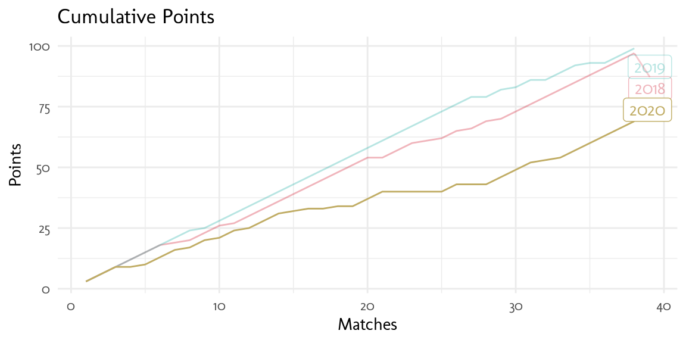
The gap increases after the 14th match, but it begins to recover around the 30th. 2018 and 2019 were amazing seasons, it would be hard to have that slope again
understat provides expected goals xG, a very popular metric in soccer analytics. According to their page
…more and more sports analytics turn to the advanced models like xG, which is a statistical measure of the quality of chances created and conceded… we trained neural network prediction algorithms with the large dataset (>100,000 shots, over 10 parameters for each)
Let’s see how many matches LFC couldn’t win having greater xG than his rival
match_season %>%
filter((xG > xGA) & result != 'w') %>%
group_by(year) %>%
summarise(
`Nº Matches` = n(),
`Points` = 3*n()-sum(pts)
) %>%
gt() %>%
tab_header(title = 'Missed Wins')| Missed Wins | ||
|---|---|---|
| year | Nº Matches | Points |
| 2018 | 3 | 7 |
| 2019 | 4 | 9 |
| 2020 | 8 | 18 |
The number of matches doubles the previous two season, losing 18 points in games where LFC supposed to have an advantage
Match Data
We can ask for stats of every LFC player at season level
# Get players stats
player_season <- list(2020, 2019, 2018) %>%
map_df(~get_team_players_stats('Liverpool', year = .x))understatr also provides shots and stats for single matches, but we need to know each match_id, which appears only on player-match level data. Let’s find all match_ids for LFC 2020 season by looking at games where Fabinho, Jota and Thiago played. Later in the post we will analyze these players individually
# Get games from players
player_match <- list(6854, 229, 3420) %>%
map_df(~get_player_matches_stats(.x))
# Distinct matches ids from 2020 season
match_ids <- player_match %>%
filter(year == 2020) %>%
distinct(match_id) %>%
pull()
# Get shots from every game
match_shots <- map_df(match_ids, ~get_match_shots(.x))
# Get stats from every game
match_stats <- map_df(match_ids, ~get_match_stats(.x))Injured Defense
LFC’s main problems this season were due to the injuries of their 3 main Central defenses early on the season. Let’s check DC performances with match stats data and join it with shots/goals conceded
# Shots conceded by LFC
shots_against <- match_shots %>%
filter((h_team != 'Liverpool' & h_a == 'h') | (a_team != 'Liverpool' & h_a == 'a')) %>%
filter(result != 'OwnGoal') %>%
group_by(match_id) %>%
summarise(
shots = n(),
goals_against = sum(result == 'Goal')
)
# DC pairs from every 2020 game
central_def <- match_stats %>%
filter(team_id == 87, position == 'DC')
# Paste players names & Join with shots conceded
central_def_pairs <- central_def %>%
group_by(match_id) %>%
arrange(player) %>% # So player order do not affect
dplyr::summarise(pair = paste0(player, collapse = ' - ')) %>%
left_join(shots_against, by = 'match_id')
# Distinct pairs
n_pairs <- unique(central_def_pairs$pair) %>% length()
# Individual DC with most appears
dc_more_appears <- central_def %>% count(player) %>% slice_max(order_by = n)
# Build gtable
central_def_pairs %>%
group_by(pair) %>%
summarise(
appearances = n(),
shots = sum(shots),
goals = sum(goals_against),
shots_per_game = round(shots/appearances, 1),
goals_per_game = round(goals/appearances, 1)
) %>%
filter(appearances > 1) %>%
arrange(desc(appearances)) %>%
gt(rowname_col = 'pair') %>%
tab_header(
title = 'Goals/Shots Conceded by Pair DC',
subtitle = glue::glue('Pairs with >1 appearence of {n_pairs} pairs used in the season')
) %>%
tab_footnote(
locations = cells_column_labels(vars(appearances)),
footnote = glue::glue('{dc_more_appears$player} had the highest number of appearances with {dc_more_appears$n}')
) %>%
cols_align('center')| Goals/Shots Conceded by Pair DC | |||||
|---|---|---|---|---|---|
| Pairs with >1 appearence of 16 pairs used in the season | |||||
| appearances1 | shots | goals | shots_per_game | goals_per_game | |
| Fabinho - Joel Matip | 6 | 46 | 3 | 7.7 | 0.5 |
| Nathaniel Phillips - Rhys Williams | 6 | 65 | 4 | 10.8 | 0.7 |
| Nathaniel Phillips - Ozan Kabak | 4 | 30 | 1 | 7.5 | 0.2 |
| Fabinho - Jordan Henderson | 3 | 23 | 5 | 7.7 | 1.7 |
| Fabinho - Ozan Kabak | 3 | 30 | 3 | 10.0 | 1.0 |
| Joseph Gomez - Virgil van Dijk | 3 | 28 | 11 | 9.3 | 3.7 |
| Fabinho - Nathaniel Phillips | 2 | 19 | 1 | 9.5 | 0.5 |
| Jordan Henderson - Nathaniel Phillips | 2 | 21 | 2 | 10.5 | 1.0 |
| Jordan Henderson - Ozan Kabak | 2 | 20 | 5 | 10.0 | 2.5 |
| 1 Fabinho had the highest number of appearances with 17 | |||||
Wow!! 16 different pairs of DC across the season. Starting pair Virgil-Gomez had only 3 appearances and have the most goals per game conceded due to the unfortunate loss against Aston Villa (7-2). Even Henderson had to play DC which is clearly not his position. Looks like Phillips and Kabak did a pretty good job having the minimum shots and goals conceded, though Kabak also suffered an injury at the end of the season. Fabinho had the most appearances despite not being DC which takes us to the next key point.
Lossing Fabinho in the midfield
I think Fabinho is one of the keys to the success of the last season, and losing him in the midfield weakened the LFC game.
fabinho <- player_match %>%
filter(player_name == 'Fabinho')
# Fabinho influence
fab_perc_pts <- fabinho %>%
filter(year == 2020) %>%
mutate(
# Compute pts earned by liverpool
pts = case_when(
h_team == 'Liverpool' & h_goals > a_goals ~ 3,
a_team == 'Liverpool' & h_goals < a_goals ~ 3,
h_goals == a_goals ~ 1,
T ~ 0
)
) %>%
filter(position != 'Sub') %>%
group_by(position) %>%
summarise(
pts = sum(pts)/(n()*3),
games = n()
) %>%
ggplot(aes(x = position, y = pts, fill = position, label = glue::glue('{games} games played'))) +
geom_col() +
geom_text(nudge_y = .05, size = 2.5) +
scale_y_continuous(labels = scales::percent) +
theme(legend.position = 'none') +
labs(x = '', y = '% of pts Earned', title = '% Points earned')
# LFC Cumulative pts color by Fabinho position
fab_cml_pts <- match_season %>%
filter(year == 2020) %>%
left_join(fabinho %>% filter(year == 2020), by = 'date') %>%
arrange(date) %>%
mutate(
cm_pts = cumsum(pts),
Matches = 1:n(),
position = replace_na(position, 'Injured')
) %>%
ggplot(aes(x = Matches, y = cm_pts, color = position)) +
geom_point() +
theme(
legend.position = 'top',
legend.justification = 'left',
legend.title = element_blank()
) +
labs(y = 'Points', title = 'LFC Cumulative Points', subtitle = 'Colored by Fabinho position')
# Patchwork join
fab_perc_pts + fab_cml_pts +
plot_layout(widths = c(1, 3)) +
plot_annotation(title = 'Fabinho Influence by Position')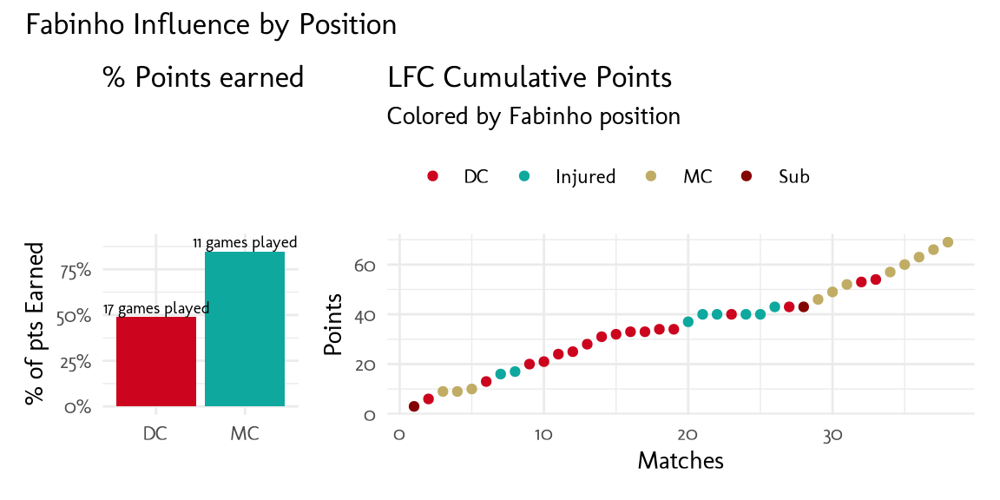
When Fabinho plays DC LFC won only 49% of possible points, while as MC the number rises to 85%. You can see how the flattest runs happen at mid-season when he played as DC and even when he was injured (yes, he was injured too). And look at the comeback at the end of the season, he played as MC in all those victories… Yes, Klopp! show some love to that man!

Goals Shortfall
Injuries weren’t the only problem, goals shortfall also affected the performance
# Attackers
main_FW <- player_season %>%
filter(player_id %in% c(1250, 838, 482))
# Attackers performances
main_FW %>%
transmute(
player_name, year,
Scored = ((npg+assists)/time)*90,
Expected = ((npxG+xA)/time)*90
) %>%
pivot_longer(c(Scored, Expected)) %>%
ggplot(aes(x = year, y = value, color = name)) +
geom_line() +
geom_point() +
scale_x_continuous(breaks = c(2018, 2019, 2020)) +
facet_wrap(~player_name) +
theme(
legend.position = 'top',
legend.justification = 'left',
legend.title = element_blank()
) +
labs(title = 'No penalty Goals + Assists per 90 minutes', y = 'G + A per 90m', x = '')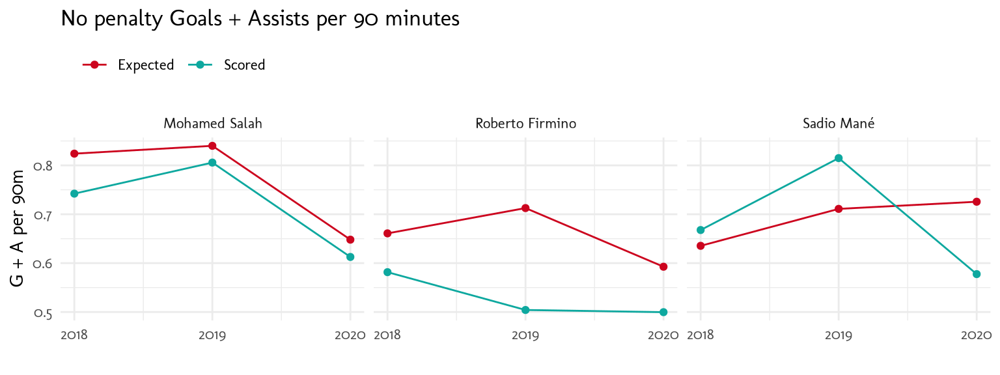
All three FW decrease their G+A per game in respect of their previous seasons, Especially Salah and Mane. Let’s compare the top 5 contributors across seasons
# Main contributors by season
player_season %>%
mutate(
GA_90m = ((npg+assists)/time)*90,
n = tidytext::reorder_within(player_name, GA_90m, year)
) %>%
group_by(year) %>%
slice_max(order_by = GA_90m, n = 5) %>%
ggplot(aes(x = GA_90m, y = n)) +
geom_col() +
facet_wrap(~year, scales = 'free_y') +
tidytext::scale_y_reordered() +
labs(title = 'Top Contributors: G + A per 90 minutes', x = 'G + A per 90m', y = '')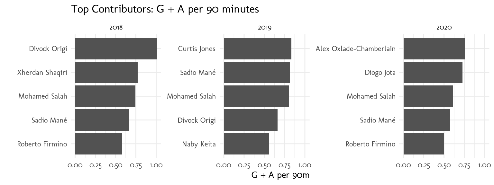
Jota and Chamberlain played a big role in helping to fill the goal gap this season, though they both suffered major injuries that made them miss a lot of games
Let’s play around with the shots data to compare the top 5 shooters
# All LFC shots
lfc_shots <- match_shots %>%
filter((h_team == 'Liverpool' & h_a == 'h') | (a_team == 'Liverpool' & h_a == 'a'))
# Top 5 shooters
.shooters <- lfc_shots %>%
count(player_id) %>%
slice_max(order_by = n, n = 5) %>%
pull(player_id)
# Build df for automagic_tabs2
shooters_dataset <- lfc_shots %>%
filter(player_id %in% .shooters) %>%
group_by(player) %>%
nest() %>%
mutate(
shotplot = map(
data,
function(df){
shots <- df %>%
mutate(.x = X*100, .y = 100-Y*100)
pitch_text <- shots %>%
summarise(
.x = 65,
`Shots per Goal` = n()/sum(result == 'Goal'),
`Average xG` = mean(xG)
) %>%
pivot_longer(-.x) %>%
mutate(
.y = c(25, 75),
value = round(value, 2)
)
shots %>%
filter(shotType != 'OtherBodyPart') %>% #To mantain consistency over color groups
ggplot(aes(x = .x, y = .y)) +
annotate_pitch() +
theme_pitch() +
geom_point(aes(size = xG, color = shotType, alpha = result == 'Goal')) +
geom_text(data = pitch_text, aes(label = glue::glue('{name}: {value}')), size = 3.5) +
scale_size_continuous(limits = c(0, 1), breaks = c(.3, .6, .9)) +
scale_alpha_manual(values = c(.3, 1), guide = FALSE) +
coord_flip(xlim = c(60, 100), ylim = c(0, 100))
}
),
n_shots = map_dbl(data, ~nrow(.x))
) %>%
arrange(desc(n_shots)) %>%
ungroup()Inspired by (@soccerPlots) For this, let’s use ggsoccer to set the soccer pitch as the background of the plot and automagic_tabs2 function from sknifedatar (@automagic_tabs), that automates the process of building tabs.
This solution works for .rmd files. check this so post for an alternative approach for .qmd files
[[1]]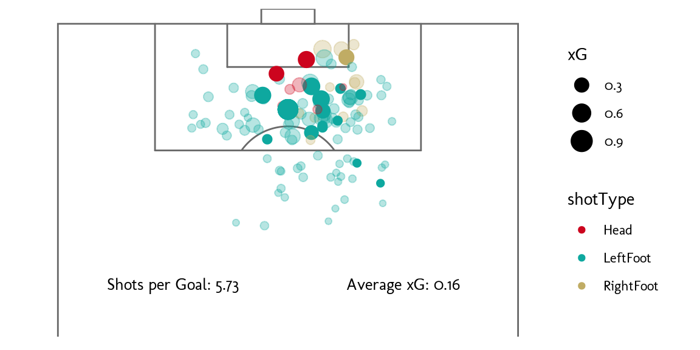
[[1]]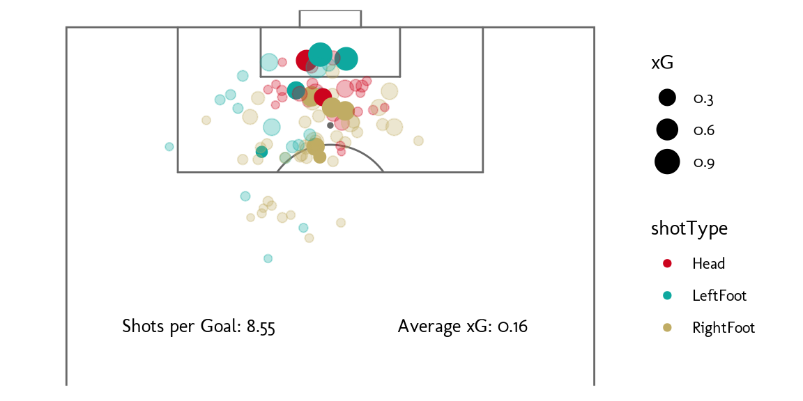
[[1]]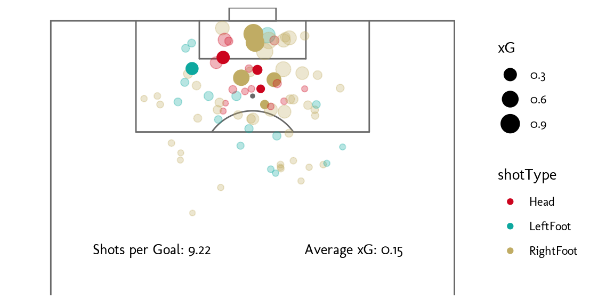
[[1]]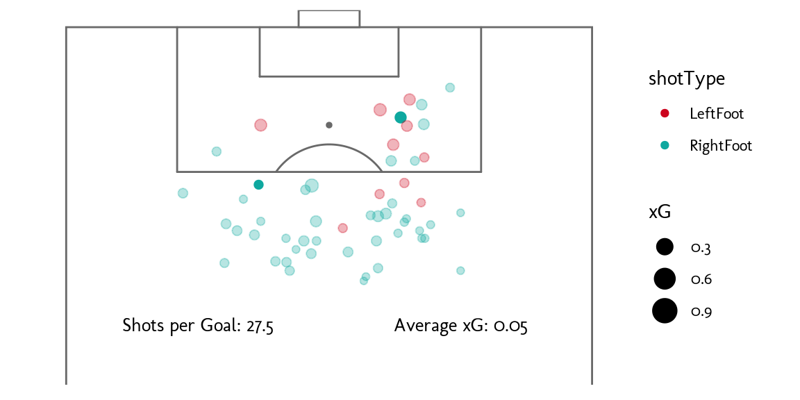
[[1]]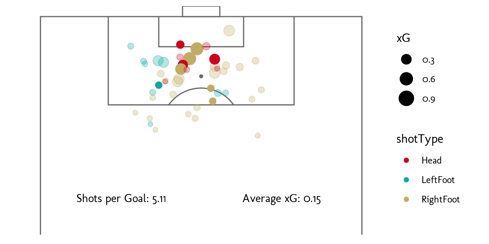
Salah is the one that makes more shots and needed less to score, he also has better xG from shots coming from the right side and he barely tries his right foot. Firmino and Mane are more balanced, trying shots with their weak foot and head, but they need more shots to score. It seems like Jota is the one that better chooses his shots. Trent has it more difficult because he shots from away having lower xG.
Signning Performance
Let’s check the performance of summer signings Jota and Thiago
player_match %>%
filter(player_id %in% c(6854, 229), year %in% c(2020, 2019, 2018)) %>%
mutate(
GA = npg+assists,
xGA = npxG+xA
) %>%
group_by(player_name, year) %>%
summarise(
`Possible Time Played (%)` = sum(time)/(n()*90),
`G+A per 90m` = (sum(GA)/sum(time))*90,
`Key Passes per 90m` = (sum(key_passes)/sum(time))*90
) %>%
pivot_longer(-c(player_name, year)) %>%
ggplot(aes(x = year, y = value, color = player_name)) +
geom_line() +
geom_point() +
facet_grid(player_name~name, scales = 'free') +
theme(legend.position = 'none') +
scale_x_continuous(breaks = c(2018, 2019, 2020)) +
labs(x = '', y = '', title = 'Summer Signning Performance')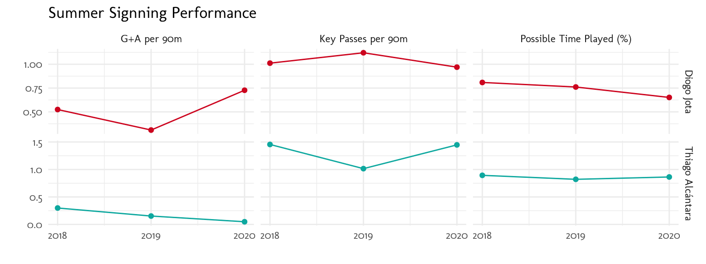
You can see Diogo adapted very quickly, increasing G+A ratio of the last season, contrary to what happened with Thiago, that got better performance at the end of the season, being a key player in the midfield
Hoodability
In this post (@Hoodability) were introduces the term of gaining points against the big six and loss against the bottom table. Let’s check hoodability for this season
# Build Table
position_table <- epl %>%
filter(year == 2020) %>%
group_by(team_name) %>%
summarise(pts = sum(pts)) %>%
arrange(desc(pts)) %>%
transmute(team_name, position = 1:n())
# pts earned by LFC
match_shots %>%
distinct(h_team, a_team, h_goals, a_goals) %>%
transmute(
team_name = if_else(h_team == 'Liverpool', a_team, h_team),
pts = case_when(
h_team == 'Liverpool' & h_goals > a_goals ~ 3,
a_team == 'Liverpool' & h_goals < a_goals ~ 3,
h_goals == a_goals ~ 1,
T ~ 0
)) %>%
left_join(position_table, by = 'team_name') %>%
mutate(
position_group = case_when(
position <= 6 ~ 'Top 6',
position >= 14 ~ 'Bottom 6',
T ~ 'Middle table'
)
) %>%
group_by(position_group) %>%
summarise(
pts = sum(pts),
ppts = pts/(3*n())
) %>%
ggplot(aes(x = position_group, y = ppts, label = glue::glue('Total pts earned: {pts}'))) +
geom_col() +
geom_text(nudge_y = .05) +
scale_y_continuous(labels = scales::percent) +
labs(y = 'Possible Points', x = 'Table Position', title = 'Possible Points Earned by Liverpool against')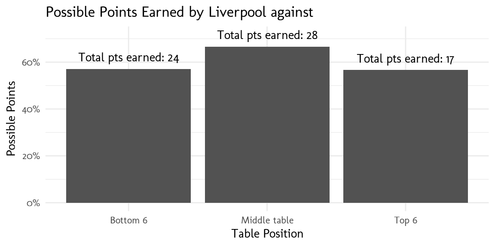
Pretty much the same possible points were earned at the bottom and top of the table, but you would expect to have a better performance against the bottom 6 teams
Sooooo, the 20-21 season was a tough one for LFC and we knew it the moment Virgil surgery was confirmed, but it got worse with Gomez and Matip injuries because basically, we run out of DC. Despite this, the team managed to qualify for Champions League with an amazing comeback and a memorable moment in Allison’s 95’ header against West Brom. Hopefully next season’s analysis I will include more Klopp gifs running towards “the Kop”… In the meantime